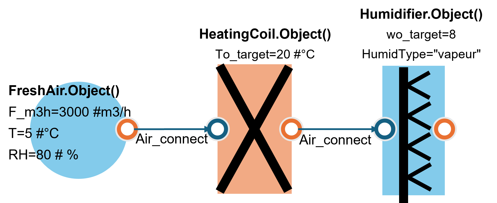
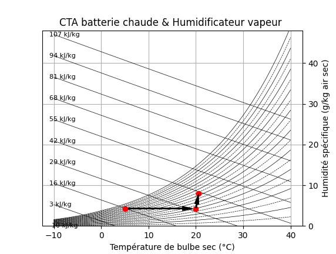

Section 5 : Usages finaux de l’energy
5.1. Module AHU - Centrales de Traitement d’Air (CTA)
Le module AHU allows modéliser les centrales de traitement d’air with leurs différents composants.
5.1.1. FreshAir - Mélange d’air neuf et air recyclé
{kind=link}

from energysystemmodels.AHU import FreshAir
# Configuration du mélange
fresh_air = FreshAir(
debit_air_neuf_m3_h=3000,
debit_air_recycle_m3_h=7000,
temperature_ext_C=5,
humidite_ext_pct=80,
temperature_reprise_C=22,
humidite_reprise_pct=45
)
# Calculer l'état du mélange
etat_melange = fresh_air.calculer_etat_melange()
print(f"Température du mélange : {etat_melange['temperature_C']:.1f}°C")
print(f"Humidité relative : {etat_melange['humidite_relative_pct']:.1f}%")
print(f"Humidité absolue : {etat_melange['humidite_absolue_g_kg']:.2f} g/kg")
print(f"Enthalpie : {etat_melange['enthalpie_kJ_kg']:.2f} kJ/kg")
Diagramme psychrométrique
{kind=link}

from energysystemmodels.AHU import FreshAir
import matplotlib.pyplot as plt
fresh_air = FreshAir(
debit_air_neuf_m3_h=3000,
debit_air_recycle_m3_h=7000,
temperature_ext_C=5,
humidite_ext_pct=80,
temperature_reprise_C=22,
humidite_reprise_pct=45
)
# Tracer le diagramme psychrométrique
fig = fresh_air.plot_psychrometric_chart()
plt.show()
5.1.2. HeatingCoil - Batterie chaude
from energysystemmodels.AHU import HeatingCoil
# Batterie chaude à eau
batterie = HeatingCoil(
type_batterie="eau_chaude",
puissance_nominale_kW=50,
temperature_entree_eau_C=80,
temperature_sortie_eau_C=60,
efficacite=0.85
)
# Air à chauffer
debit_air = 10000 # m³/h
T_air_entree = 10 # °C
# Calculer le chauffage
resultats = batterie.calculer_chauffage(
debit_air_m3_h=debit_air,
temperature_air_entree_C=T_air_entree
)
print(f"Puissance de chauffage : {resultats['puissance_kW']:.2f} kW")
print(f"Température air sortie : {resultats['temperature_air_sortie_C']:.1f}°C")
print(f"Débit d'eau : {resultats['debit_eau_m3_h']:.2f} m³/h")
Example : Dimensionnement d’une batterie chaude
from energysystemmodels.AHU import HeatingCoil
# Conditions de dimensionnement
debit_air = 15000 # m³/h
T_air_entree = 5 # °C
T_air_sortie_voulue = 18 # °C
T_eau_aller = 80 # °C
T_eau_retour = 60 # °C
# Calculer la puissance nécessaire
rho_air = 1.2 # kg/m³
cp_air = 1.005 # kJ/kg.K
debit_massique_air = debit_air / 3600 * rho_air # kg/s
puissance_requise = debit_massique_air * cp_air * (T_air_sortie_voulue - T_air_entree)
print(f"Puissance requise : {puissance_requise:.2f} kW")
# Créer la batterie avec cette puissance
batterie = HeatingCoil(
type_batterie="eau_chaude",
puissance_nominale_kW=puissance_requise,
temperature_entree_eau_C=T_eau_aller,
temperature_sortie_eau_C=T_eau_retour,
efficacite=0.90
)
# Vérifier les performances
resultats = batterie.calculer_chauffage(debit_air, T_air_entree)
print(f"Température air sortie obtenue : {resultats['temperature_air_sortie_C']:.1f}°C")
5.1.3. Humidifier - Humidificateur
from energysystemmodels.AHU import Humidifier
# Humidificateur à vapeur
humidificateur = Humidifier(
type_humidificateur="vapeur",
capacite_kg_h=30,
efficacite=0.95
)
# Air à humidifier
debit_air = 10000 # m³/h
T_air = 20 # °C
HR_entree = 30 # %
HR_souhaitee = 50 # %
# Calculer l'humidification
resultats = humidificateur.calculer_humidification(
debit_air_m3_h=debit_air,
temperature_C=T_air,
humidite_relative_entree_pct=HR_entree,
humidite_relative_sortie_pct=HR_souhaitee
)
print(f"Débit de vapeur nécessaire : {resultats['debit_vapeur_kg_h']:.2f} kg/h")
print(f"Puissance consommée : {resultats['puissance_kW']:.2f} kW")
print(f"Humidité absolue entrée : {resultats['humidite_abs_entree_g_kg']:.2f} g/kg")
print(f"Humidité absolue sortie : {resultats['humidite_abs_sortie_g_kg']:.2f} g/kg")
Example complet : CTA complète
from energysystemmodels.AHU import FreshAir, HeatingCoil, CoolingCoil, Humidifier, Fan
# Conditions extérieures hiver
T_ext = 5 # °C
HR_ext = 80 # %
# Conditions intérieures
T_reprise = 22 # °C
HR_reprise = 45 # %
# Consigne soufflage
T_soufflage = 18 # °C
HR_soufflage = 50 # %
# Débits
debit_air_neuf = 3000 # m³/h
debit_air_recycle = 7000 # m³/h
debit_total = debit_air_neuf + debit_air_recycle
print("=== SIMULATION CTA HIVER ===\n")
# 1. Mélange air neuf / air recyclé
fresh_air = FreshAir(
debit_air_neuf_m3_h=debit_air_neuf,
debit_air_recycle_m3_h=debit_air_recycle,
temperature_ext_C=T_ext,
humidite_ext_pct=HR_ext,
temperature_reprise_C=T_reprise,
humidite_reprise_pct=HR_reprise
)
etat_melange = fresh_air.calculer_etat_melange()
print(f"1. Après mélange :")
print(f" T = {etat_melange['temperature_C']:.1f}°C")
print(f" HR = {etat_melange['humidite_relative_pct']:.1f}%\n")
# 2. Chauffage
batterie_chaude = HeatingCoil(
type_batterie="eau_chaude",
puissance_nominale_kW=80,
temperature_entree_eau_C=80,
temperature_sortie_eau_C=60,
efficacite=0.90
)
resultats_chauffage = batterie_chaude.calculer_chauffage(
debit_air_m3_h=debit_total,
temperature_air_entree_C=etat_melange['temperature_C']
)
print(f"2. Après batterie chaude :")
print(f" T = {resultats_chauffage['temperature_air_sortie_C']:.1f}°C")
print(f" Puissance = {resultats_chauffage['puissance_kW']:.2f} kW\n")
# 3. Humidification
humidificateur = Humidifier(
type_humidificateur="vapeur",
capacite_kg_h=50,
efficacite=0.95
)
# Calculer HR après chauffage (approximation)
HR_apres_chauffage = etat_melange['humidite_relative_pct'] * \
etat_melange['temperature_C'] / \
resultats_chauffage['temperature_air_sortie_C']
resultats_humidif = humidificateur.calculer_humidification(
debit_air_m3_h=debit_total,
temperature_C=resultats_chauffage['temperature_air_sortie_C'],
humidite_relative_entree_pct=HR_apres_chauffage,
humidite_relative_sortie_pct=HR_soufflage
)
print(f"3. Après humidification :")
print(f" HR = {HR_soufflage}%")
print(f" Vapeur = {resultats_humidif['debit_vapeur_kg_h']:.2f} kg/h")
print(f" Puissance = {resultats_humidif['puissance_kW']:.2f} kW\n")
# 4. Ventilateur
ventilateur = Fan(
type_ventilateur="centrifuge",
debit_nominal_m3_h=debit_total,
pression_statique_Pa=800,
rendement=0.75
)
puissance_ventilateur = ventilateur.calculer_puissance()
print(f"4. Ventilateur :")
print(f" Puissance = {puissance_ventilateur:.2f} kW\n")
# Bilan énergétique total
print("=== BILAN ÉNERGÉTIQUE ===")
puissance_totale = (resultats_chauffage['puissance_kW'] +
resultats_humidif['puissance_kW'] +
puissance_ventilateur)
print(f"Puissance totale CTA : {puissance_totale:.2f} kW")
Example issu des tests : GenericAHU (Recycling)
from AHU.GenericAHU import GenericAHU
ahu = GenericAHU()
results = ahu.run_simulation(
file_path='test/AHU/data/config_recycling.xlsx',
sheet_name='1. Air Recycling AHU Input',
output_file='test/AHU/data/results_recycling.xlsx'
)
print("Nombre de points simulés:", len(results))
print("Colonnes de sortie:", results.shape[1])
print("Puissance Chauffage moyenne:", results['HC_Q_th[kW]'].mean())
5.2. Module PinchAnalysis - Analyse Pinch
L’analyse Pinch permet d’optimiser les réseaux d’échangeurs de chaleur et de minimiser la consommation energy.
Example : Analyse Pinch simple
from energysystemmodels.PinchAnalysis import PinchAnalysis, Stream
# Définir les courants chauds
hot_streams = [
Stream(name="H1", T_in=180, T_out=60, heat_flow=300), # kW
Stream(name="H2", T_in=150, T_out=40, heat_flow=200)
]
# Définir les courants froids
cold_streams = [
Stream(name="C1", T_in=20, T_out=135, heat_flow=250),
Stream(name="C2", T_in=80, T_out=140, heat_flow=150)
]
# Créer l'analyse Pinch
pinch = PinchAnalysis(
hot_streams=hot_streams,
cold_streams=cold_streams,
delta_T_min=10 # Pincement minimal 10°C
)
# Calculer les résultats
resultats = pinch.analyze()
print(f"Température de pincement : {resultats['pinch_temperature']}°C")
print(f"Besoin minimum de chauffage : {resultats['hot_utility_min']:.0f} kW")
print(f"Besoin minimum de refroidissement : {resultats['cold_utility_min']:.0f} kW")
print(f"Récupération de chaleur possible : {resultats['heat_recovery']:.0f} kW")
print(f"Économie potentielle : {resultats['energy_savings_pct']:.1f}%")
Courbes composites
from energysystemmodels.PinchAnalysis import PinchAnalysis
import matplotlib.pyplot as plt
# Utiliser l'analyse précédente
fig = pinch.plot_composite_curves()
plt.show()
Example complet : Optimisation d’un procédé industriel
from energysystemmodels.PinchAnalysis import PinchAnalysis, Stream
# Procédé industriel avec 4 courants chauds et 3 courants froids
hot_streams = [
Stream(name="Reactor outlet", T_in=220, T_out=40, heat_flow=500),
Stream(name="Distillation", T_in=180, T_out=60, heat_flow=400),
Stream(name="Product cooling", T_in=150, T_out=80, heat_flow=300),
Stream(name="Exhaust gases", T_in=350, T_out=120, heat_flow=250)
]
cold_streams = [
Stream(name="Feed preheating", T_in=20, T_out=180, heat_flow=450),
Stream(name="Reboiler", T_in=140, T_out=145, heat_flow=350),
Stream(name="Process water", T_in=15, T_out=90, heat_flow=200)
]
# Analyse avec différents pincements
delta_T_values = [5, 10, 15, 20]
print("Analyse de sensibilité au pincement :")
print("-" * 80)
print(f"{'ΔTmin (°C)':<12} {'Chauffage (kW)':<18} {'Refroid. (kW)':<18} {'Récup. (%)':<15}")
print("-" * 80)
for delta_T in delta_T_values:
pinch = PinchAnalysis(hot_streams, cold_streams, delta_T_min=delta_T)
resultats = pinch.analyze()
print(f"{delta_T:<12.0f} {resultats['hot_utility_min']:<18.0f} "
f"{resultats['cold_utility_min']:<18.0f} "
f"{resultats['energy_savings_pct']:<15.1f}")
# Analyse détaillée avec ΔTmin = 10°C
print("\n=== Configuration optimale (ΔTmin = 10°C) ===")
pinch_optimal = PinchAnalysis(hot_streams, cold_streams, delta_T_min=10)
resultats_optimal = pinch_optimal.analyze()
print(f"\nBilan énergétique :")
print(f" Chaleur disponible : {resultats_optimal['total_hot_available']:.0f} kW")
print(f" Chaleur requise : {resultats_optimal['total_cold_required']:.0f} kW")
print(f" Récupération interne : {resultats_optimal['heat_recovery']:.0f} kW")
print(f" Utilité chaude nécessaire : {resultats_optimal['hot_utility_min']:.0f} kW")
print(f" Utilité froide nécessaire : {resultats_optimal['cold_utility_min']:.0f} kW")
# Tracer les courbes composites
fig = pinch_optimal.plot_composite_curves()
plt.show()
Example issu des tests : PinchAnalysis on data réelles
from PinchAnalysis import PinchAnalysis
import pandas as pd
data = {
'id': [1, 2, 3, 4],
'name': ['C1', 'H1', 'C2', 'H2'],
'mCp': [2.0, 3.0, 4.0, 1.5],
'Ti': [20, 170, 80, 150],
'To': [135, 60, 140, 30],
'dTmin2': [5, 5, 5, 5],
}
liste_flux = pd.DataFrame(data)
Pinch_study = PinchAnalysis.Object(liste_flux)
print(Pinch_study.Pinch_Temperature)
print(Pinch_study.Heating_duty)
print(Pinch_study.Cooling_duty)
5.3. Module IPMVP - International Performance Measurement and Verification Protocol
Le module IPMVP allows mesurer et vérifier les économies d’energy according to the protocol international.
5.3.1. Modèle de régression journalière
from energysystemmodels.IPMVP import IPMVPModel
import pandas as pd
import numpy as np
# Générer des données de référence (baseline)
dates_baseline = pd.date_range('2023-01-01', '2023-12-31', freq='D')
temperatures = 15 + 10 * np.sin(2 * np.pi * np.arange(len(dates_baseline)) / 365)
# Consommation corrélée à la température
consommation_baseline = 1000 + 50 * (20 - temperatures) * (temperatures < 20)
df_baseline = pd.DataFrame({
'date': dates_baseline,
'temperature': temperatures,
'consommation_kWh': consommation_baseline
})
# Créer le modèle IPMVP
model = IPMVPModel(periode_baseline=df_baseline)
# Entraîner le modèle
model.fit(variable_independante='temperature', variable_dependante='consommation_kWh')
print(f"R² du modèle : {model.r_squared:.3f}")
print(f"RMSE : {model.rmse:.2f} kWh")
Example issu des tests : IPMVP with Excel
from IPMVP.IPMVP import Mathematical_Models
import os
from datetime import datetime
import pandas as pd
directory = os.getcwd()
directory = directory + "\src\IPMVP\" + "IPMVP_input.xlsx"
df = pd.read_excel(directory)
df['Mois'] = pd.to_datetime(df['Mois'])
df = df.set_index(df['Mois'])
start_baseline_period = datetime(2016, 9, 1, hour=0)
end_baseline_period = datetime(2021, 5, 1, hour=0)
start_reporting_period = datetime(2021, 10, 1, hour=0)
end_reporting_period = datetime(2022, 10, 1, hour=0)
X = df[["DJU"]]
y = df["Consommation (kWh) - Relevé"]
result = Mathematical_Models(
y, X,
start_baseline_period, end_baseline_period,
start_reporting_period, end_reporting_period,
degree=3, print_report=True, seuil_z_scores=3, site="exemple_site"
)
print(result)
Calcul des économies
# Données de la période de reporting (après travaux)
dates_reporting = pd.date_range('2024-01-01', '2024-12-31', freq='D')
temperatures_reporting = 15 + 10 * np.sin(2 * np.pi * np.arange(len(dates_reporting)) / 365)
# Consommation réelle après travaux (réduction de 20%)
consommation_reporting = (1000 + 50 * (20 - temperatures_reporting) *
(temperatures_reporting < 20)) * 0.80
df_reporting = pd.DataFrame({
'date': dates_reporting,
'temperature': temperatures_reporting,
'consommation_kWh': consommation_reporting
})
# Calculer les économies
economies = model.calculer_economies(df_reporting)
print(f"\n=== RÉSULTATS IPMVP ===")
print(f"Consommation baseline ajustée : {economies['baseline_ajustee_kWh']:.0f} kWh")
print(f"Consommation réelle : {economies['consommation_reelle_kWh']:.0f} kWh")
print(f"Économies réalisées : {economies['economies_kWh']:.0f} kWh")
print(f"Taux d'économie : {economies['taux_economie_pct']:.1f}%")
print(f"Incertitude : ±{economies['incertitude_pct']:.1f}%")
5.3.2. Modèle hebdomadaire
from energysystemmodels.IPMVP import IPMVPModel
import pandas as pd
# Données hebdomadaires
dates_hebdo = pd.date_range('2023-01-01', '2023-12-31', freq='W')
df_hebdo_baseline = pd.DataFrame({
'semaine': range(len(dates_hebdo)),
'temperature_moy': 15 + 8 * np.sin(2 * np.pi * np.arange(len(dates_hebdo)) / 52),
'production_unite': 1000 + 200 * np.random.random(len(dates_hebdo)),
'consommation_kWh': 7000 + np.random.normal(0, 500, len(dates_hebdo))
})
# Modèle multi-variables
model_hebdo = IPMVPModel(periode_baseline=df_hebdo_baseline)
model_hebdo.fit(
variables_independantes=['temperature_moy', 'production_unite'],
variable_dependante='consommation_kWh'
)
print(f"R² du modèle hebdomadaire : {model_hebdo.r_squared:.3f}")
5.3.3. Modèle mensuel
from energysystemmodels.IPMVP import IPMVPModel
import pandas as pd
# Données mensuelles de consommation
mois = ['Jan', 'Fév', 'Mar', 'Avr', 'Mai', 'Jun',
'Jul', 'Aoû', 'Sep', 'Oct', 'Nov', 'Déc']
df_mensuel = pd.DataFrame({
'mois': mois,
'dju_chauffage': [450, 380, 310, 180, 80, 20, 0, 0, 50, 150, 280, 400],
'consommation_gaz_kWh': [45000, 38000, 31000, 18000, 8000, 2000,
0, 0, 5000, 15000, 28000, 40000]
})
# Modèle mensuel
model_mensuel = IPMVPModel(periode_baseline=df_mensuel)
model_mensuel.fit(
variable_independante='dju_chauffage',
variable_dependante='consommation_gaz_kWh'
)
print(f"\nModèle mensuel :")
print(f"R² : {model_mensuel.r_squared:.3f}")
print(f"Coefficient DJU : {model_mensuel.coefficients['dju_chauffage']:.2f} kWh/DJU")
Rapport IPMVP complet
from energysystemmodels.IPMVP import IPMVPReport
# Générer un rapport complet
rapport = IPMVPReport(
model=model,
periode_baseline=df_baseline,
periode_reporting=df_reporting,
description_projet="Isolation de l'enveloppe et optimisation CVC",
cout_travaux=150000,
cout_energie=0.10 # €/kWh
)
# Générer le rapport
rapport.generer_rapport(fichier='rapport_ipmvp.pdf')
# Afficher le résumé
print(rapport.get_summary())
5.4. Modèle RC de bâtiment
Le model RC (Résistance-Capacité) allows simuler le comportement thermique dynamique d’un bâtiment.
Modèle RC simple (1R1C)
from energysystemmodels.BuildingModel import RC_Model
# Paramètres du bâtiment
modele_rc = RC_Model(
resistance_thermique=0.01, # K/W
capacite_thermique=50e6, # J/K
surface_vitree_m2=30,
orientation_vitrage=180, # Sud
apports_internes_W=500
)
# Conditions initiales
T_interieure_initiale = 20 # °C
# Simulation sur 24h
import numpy as np
heures = np.arange(0, 24, 1)
temperatures_ext = 10 + 5 * np.sin(2 * np.pi * (heures - 6) / 24)
temperatures_int = []
T_int = T_interieure_initiale
for h, T_ext in zip(heures, temperatures_ext):
T_int = modele_rc.simuler_pas_de_temps(
T_interieure=T_int,
T_exterieure=T_ext,
rayonnement_solaire_W_m2=max(0, 500 * np.sin(np.pi * (h - 6) / 12)),
dt_seconds=3600
)
temperatures_int.append(T_int)
# Affichage
import matplotlib.pyplot as plt
plt.figure(figsize=(12, 6))
plt.plot(heures, temperatures_ext, label='T° extérieure', linewidth=2)
plt.plot(heures, temperatures_int, label='T° intérieure', linewidth=2)
plt.xlabel('Heure')
plt.ylabel('Température (°C)')
plt.title('Modèle RC 1R1C - Évolution des températures')
plt.legend()
plt.grid(True, alpha=0.3)
plt.show()
Modèle RC avancé (2R2C)
from energysystemmodels.BuildingModel import RC_Model_Advanced
# Modèle 2R2C avec inertie lourde et légère
modele_2r2c = RC_Model_Advanced(
R_envelope=0.005, # K/W - Résistance enveloppe
R_internal=0.003, # K/W - Résistance interne
C_light=10e6, # J/K - Capacité légère (air)
C_heavy=100e6, # J/K - Capacité lourde (structure)
surface_vitree_m2=40,
apports_internes_W=800
)
# Simulation avec chauffage
T_consigne = 20 # °C
resultats_simulation = modele_2r2c.simuler_periode(
T_ext_serie=temperatures_ext,
T_consigne=T_consigne,
puissance_chauffage_max_W=5000,
dt_seconds=3600
)
print(f"Consommation de chauffage : {resultats_simulation['energie_chauffage_kWh']:.1f} kWh")
print(f"Température moyenne : {np.mean(resultats_simulation['temperatures_int']):.1f}°C")